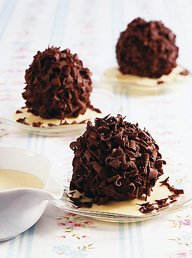
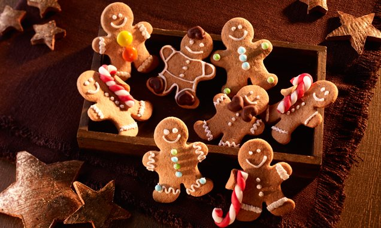
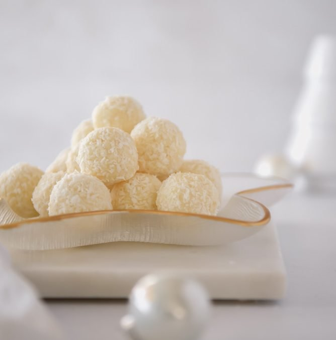
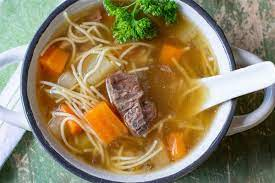

Sve sastojke zajedno izmiješajte te ako vam se čini premekano, dodajte još baze, npr. keksa ili mljevenih badema ili oraha... Oblikujte male kuglice, a u sredinu svake kuglice utisnite žele bombon... Kada su kuglice sve gotove, napravite glazuru od čokolade. Bilo bijele, crne ili mliječne, po želji. Glazuru napravite od 2 žličice maslaca, 2 jušne žlice mlijeka i 10 dag čokolade. Najjednostavnije bi bilo kuglice staviti na rešetku (npr. od pećnice ili hladnjaka), ispod staviti tacu i mlakom glazurom polijevati kuglice te pustiti da se glazura stvrdne. Nakon toga, stavite kuglice u hladnjak.
Za šećerne štapiće od bijelog i crvenog fondanta izradite trake promjera oko cm. Stavite ih jedne do druge i isprepletite po jednu crvenu i bijelu traku. Narežite na komade dužine oko 6 cm i oblikujte štapiće. Ostavite više sati da se suši. Obje vrste brašna pomiješajte sa sodom te zajedno sa začinima, jajem i mlijekom dodajte smjesi šećera i masnoće te mikserom (lopaticama) umijesite glatko tijesto. Tijesto u porcijama razvaljajte na lagano pobrašnjenoj radnoj površini na debljinu od 1/2 cm i izrezujte čovječuljke od medenjaka. Od alu folije izradite nekoliko tankih valjaka i stavite ih nekolicini čovječuljaka u ruku (slika 2). Ruku preklopite preko toga i pritisnite. Stavite na lim za pečenje i pecite.
U lonac stavi vodu i šećer u prahu te ih zakuhaj do vrenja. Neka smjesa kuha koju minutu i zatim dodaj maslac. U posudu stavi mlijeko u prahu i 100 grama kokosovog brašna te ih prelij vrućom smjesom. Mikserom smjesu dobro izradi i ostavi ju u hladnjaku da se zgusne barem jedan sat. Kada se zgusnula, žlicom uzmi malo smjese, u sredinu stavi badem i od smjese oblikuj kuglicu. Dok je još ljepljiva od topline ruku, kuglicu uvaljaj u kokosovo brašno i stavi nazad u hladnjak da se stisne.
Krepka i ukusna pileća juha nešto je što je uvijek dobrodošlo na svakom stolu. Neki će reći kako je odlična za liječenje ili barem ublažavanje simptoma sezonskih bolesti poput raznih prehlada i definitivno su u pravu. Ipak, ova je juha prije svega odličan uvod u svaki dobar ručak jer uvijek nepogrešivo otvara tek za one fine stvari koje nakon nje dolaze na trpezu.

Goveđa juha najklasičniji je proizvod kuhinje naših baka. Ne poznam nikoga koga ne vežu neke uspomene uz nju. Priprava je jednostavna i brza, rezultat sjajan: mirisna, opojna, lagana, zdrava i smirujuća juha. Ako iz juhe izvadite meso i napravite malo umaka od hrena, te restanog krumpira evo i glavnog jela.
